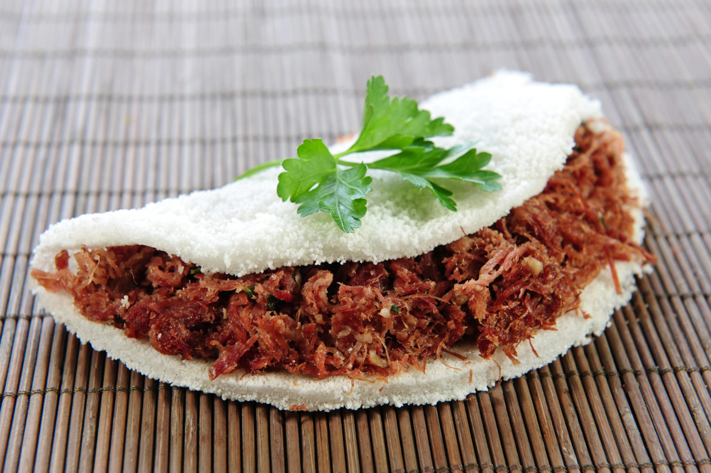

Tapioca

Description
Commom brazilian food, made with the gum of a plant with the same name.
You can stuff with anything you like, it can be salty or sweet.
Besides, this food can be a meal or a simple snack
Ingredients
- 50g of tapioca gum
- 10g of butter
- Stuff of your preference
Steps
- Sift the gum in a frying pan, filling all over bottom
- Heat over low heat
- In one minute, more or less, you can add the stuff you want
to warrant that it will heat together
- If you do not want a stuff, you can take off when it hardens
- If you want a stuff, you can take off when the stuff is to your linking
- Watch out to not burn it
- Rub the butter
Home